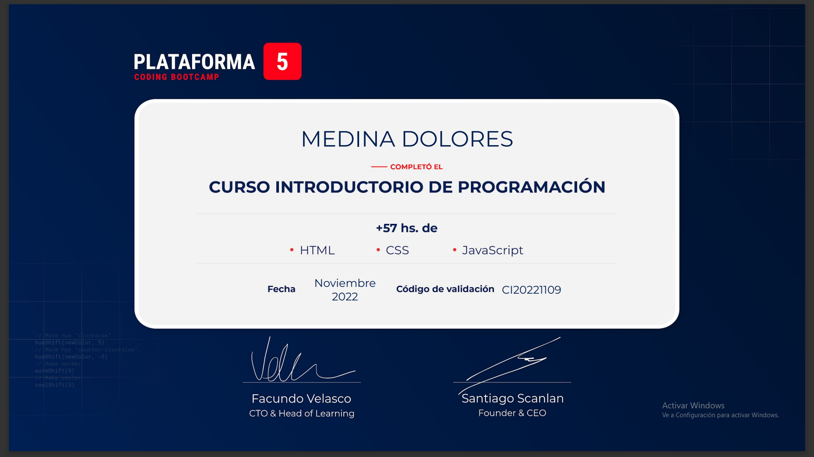
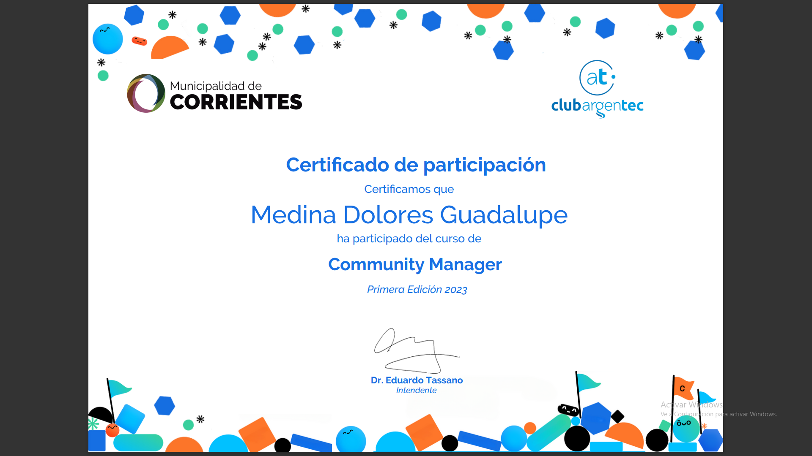
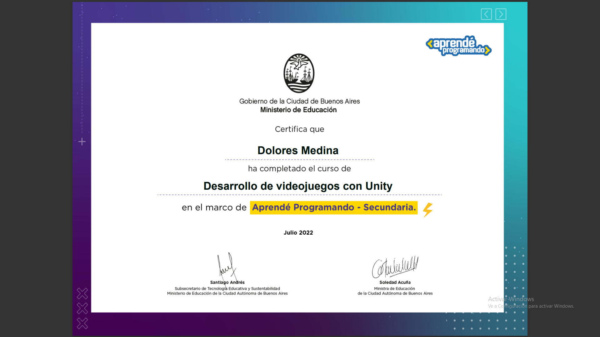

EDUCACIÓN
Colegio informático "San Juan de Vera", Nivel primario — Egresada en el 2016
Colegio "Normal Doctor Juan Pujol" Nivel secundario- Egresada en el 2022 Bachiller en Ciencias Naturales.
Tecnicatura en Portugués: Instituto "Josefina Contte"- Egreso diciembre del 2022
ACTUALMENTE: ESTUDIANDO LA TECNICATURA UNIVERSITARIA EN PROGRAMACIÓN DE VIDEOJUEGOS- Universidad de la Cuenca del Plata.
EXPERIENCIA
Diego Leiva salón, San Lorenzo y 9 de julio — administración y atención al cliente-Mes de julio 2023
Dolmar Herrería (marketing y community mánager) MES DE febrero 2019- diciembre 2022
RECONOCIMIENTOS
Curso en programación de Videojuegos:Plataforma "Aprende programando"- Egreso julio del 2022
Curso en programación de páginas web:(mediante una beca) "Plataforma 5"- Egreso noviembre del 2022
Curso en marketing digital y community mánager: "Argentec"-egreso junio del 2023


